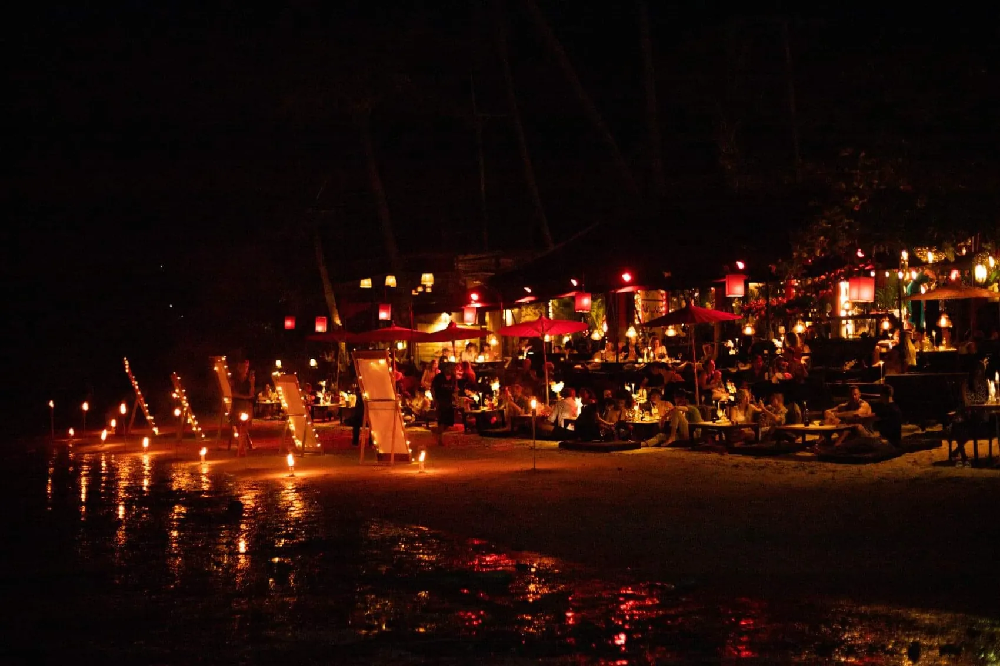

Romantic Dinner in Koh Phangan: Where to Eat for Two (2026)
The most romantic dinners in Koh Phangan — candlelit rooms, beachfront tables and sunset views, from Dar Mansour and Dear Phangan to L'Alcove and Yukinoya.
Some evenings are meant to slow down. A quiet table, low light, the sea nearby, and no reason to rush — Koh Phangan does this beautifully once you know where to look.
This guide brings together the island's most romantic places to eat, from candlelit rooms to beachfront tables and sunset terraces. It's published by Dar Mansour, so we'll be upfront: our own table is one of them. But a romantic evening is personal, so we've included the spots we'd genuinely send couples to — whatever kind of night you're planning.
Straight to it: for a candlelit, riad-style dinner, Dar Mansour; for a chef-led garden tasting, Dear Phangan; for French cooking on the sand, L'Alcove; and for a sunset drink before dinner, CINTAMANI or Bluerama.
How We Selected These Spots
We live and eat on the island year-round, so these are places we return to — chosen for atmosphere first, then food, service and setting. We've noted honestly what each one is best for, because the right romantic dinner depends on the couple. None of these picks paid to be here, and we've placed Dar Mansour among them, not above them.
Editor's Choice
If we were planning one memorable evening for friends visiting Koh Phangan, these five would be the first we'd consider — each a different mood:
- Dar Mansour — candlelit Moroccan slow dining
- Dear Phangan — chef-led garden tasting
- L'Alcove — French cooking on the beach
- Yukinoya — teppanyaki theatre by the sea
- CINTAMANI — striking design and cocktails
Romantic Dinner Quick Picks
Short on time? Here are our favourites at a glance.
| Looking for… | Our pick | Area |
|---|---|---|
| Candlelit, riad-style dinner | Dar Mansour | Hin Kong / Sri Thanu |
| Marriage proposal (private) | Dar Mansour | Hin Kong |
| Chef's table for two | Dear Phangan | Wok Tum |
| French dinner on the beach | L'Alcove | Hin Kong Beach |
| Striking design & cocktails | CINTAMANI | Hin Kong Beach |
| Sunset drink before dinner | Bluerama | Nai Wok, Wok Tum |
| Honeymoon / east coast | Yukinoya (Anantara) | Thong Nai Pan |
Candlelit & Intimate
Dar Mansour — A Riad-Style Evening
This is our own table, so take it as an honest invitation rather than a sales pitch. Dar Mansour is the only Moroccan restaurant on Koh Phangan, set on the road between Hin Kong and Sri Thanu. One of the more intimate dining rooms in Koh Phangan, the space is candlelit and dressed with décor gathered across Morocco — closer to an evening in a riad than a night out. Slow-cooked tajines, tanjia and hand-rolled couscous arrive unhurried, often to the quiet rhythms of Gnaoua music — a night built for lingering.
Best for — Anniversaries, proposals, discovering Moroccan cuisine
Price — ฿฿
Good to know — Dinner only; reservation recommended. We arrange private Moroccan dinners for special occasions, and slow-cooked mains are best pre-ordered ahead.
Location — West Coast · Hin Kong Road, between Hin Kong and Sri Thanu. View on map ↗
Best Chef's Table for Couples
Dear Phangan — A Chef-Led Garden
A few minutes away in Wok Tum, Dear Phangan sits in a garden of papaya, banana and fresh herbs, and every part of the evening feels considered. Recognised by the Michelin Guide, it's chef-led and firmly local — a blind menu that changes with the seasons, seafood in daily from the pier — quietly creative but rooted in Thai flavour.
Best for — Food-lover couples, a romantic tasting
Price — ฿฿฿
Good to know — Reservations essential; the blind menu changes with the season and the chef prepares only the covers booked.
Location — West Coast · Wok Tum, on the road towards Hin Kong. View on map ↗
Sunset & Beachfront Romance
L'Alcove — French Cooking on the Sand
At Hin Kong Beach, L'Alcove sets its tables almost on the sand. The cooking is French with a light Thai touch — duck confit, fresh salmon, a generous cheese platter — backed by one of the island's deepest lists of French wine and Champagne. Time it for sunset.
Best for — Wine lovers, beachfront sunset dinners
Price — ฿฿฿
Good to know — Beachfront tables are limited — arrive before sunset; live music some evenings.
Location — West Coast · Hin Kong Beach. View on map ↗
CINTAMANI — Striking Design & Cocktails
Also on Hin Kong Beach, CINTAMANI feels transporting — Silk Road inspiration, jungle-glam design and tropical gardens by the sea. The cocktails match the room, with a considered wine list and Mediterranean-style tapas. Settle in as the sky changes over the Gulf.
Best for — A design-led aperitif and dinner
Price — ฿฿
Good to know — Come before sunset for the best of the light.
Location — West Coast · Hin Kong Beach. View on map ↗
A Sunset Drink Before Dinner
Bluerama
Just before Amsterdam Bar in Nai Wok, Bluerama is designed around an adults-only infinity pool overlooking the Gulf — calm, refined and made for couples. It's not a full dinner spot, but it's one of the loveliest places for a sundowner before your table elsewhere.
Best for — A quiet sunset drink, adults-only calm
Price — ฿฿฿
Good to know — Adults only; reserve an upper-terrace table if you'd like to linger.
Location — West Coast · Nai Wok Beach, Wok Tum. View on map ↗
Best for a Honeymoon
Yukinoya at Anantara Rasananda — Teppanyaki by the Sea
For couples staying around Thong Nai Pan, you don't have to cross the island. Yukinoya, inside Anantara Rasananda, is Koh Phangan's only teppanyaki restaurant — dinner comes with a show as the chef grills A5 Wagyu and local seafood in front of you, with a deep sake list and tables under the stars over the pool and sea.
Best for — Honeymooners, a special-occasion dinner
Price — ฿฿฿
Good to know — Inside Anantara Rasananda; reservation recommended.
Location — East Coast · Thong Nai Pan. View on map ↗
Also worth knowing: Santhiya suits honeymooners with its secluded resort setting on the same coast, and on the west coast Kupu Kupu creates beautiful private dinners.
Where to Watch the Sunset First
A romantic dinner is even better after the light show. Our Koh Phangan sunset guide covers the best spots across the west coast — many just minutes from the tables above. For more island dining beyond date night, see our full guide to the best restaurants in Koh Phangan.
Practical Tips for a Romantic Evening
- Reserve ahead, especially at weekends and around Full Moon week.
- Arrive around sunset — the west coast glows about 30–40 minutes before dark.
- Ask for the best table when you book (beachfront, garden, or upper terrace).
- For a proposal, a private dining setup gives you privacy and control over the moment.
- Plan transport back in advance; some spots sit up quiet hillside roads.
Final Thoughts
A romantic dinner isn't defined by candlelight alone. The most memorable ones are rarely the most elaborate — they're the evenings you remember years later because the conversation lasted longer than the meal. Koh Phangan has more of those places than most people realise; you simply need to know where to find them.
Frequently asked questions
What is the most romantic restaurant in Koh Phangan?
It depends on the mood. For a candlelit, riad-style evening, Dar Mansour in Hin Kong is hard to beat; for a chef-led tasting in a garden, Dear Phangan; and for French cooking with your feet almost in the sand, L'Alcove on Hin Kong Beach.
Where can I have a romantic dinner with a sunset view?
The west coast is best. L'Alcove and CINTAMANI sit right on Hin Kong Beach, while Bluerama offers an adults-only infinity pool for a sunset drink before dinner. Arrive 30–40 minutes before sunset for the best light.
Where should I go for a marriage proposal in Koh Phangan?
For privacy, a private dining setup works best — Dar Mansour arranges private Moroccan dinners for proposals and special occasions, and Dear Phangan's intimate garden suits a quiet celebration.
Is there a romantic dinner on the beach in Koh Phangan?
Yes. L'Alcove and CINTAMANI place their tables on or beside Hin Kong Beach. Book a beachfront table ahead, especially in high season.
Which restaurants are best for a honeymoon?
For couples staying on the east coast, Yukinoya at Anantara Rasananda and the resort dining at Santhiya (Thong Nai Pan) are memorable; on the west coast, Dar Mansour and Dear Phangan make special off-property evenings.
Is Koh Phangan good for couples?
Very much so. Beyond the parties it's known for, the island has quiet west-coast beaches, sunset bars and intimate restaurants that suit couples, honeymooners and anniversaries — especially around Sri Thanu, Hin Kong and Thong Nai Pan.
Do I need to reserve for a romantic dinner?
Reservation is strongly recommended for the island's best tables, particularly at weekends and around Full Moon week. For slow-cooked mains, some restaurants (including Dar Mansour) take pre-orders a few hours ahead.
Taste the story around our table
The best chapters are written over a slow Moroccan dinner. Reserve your evening at Dar Mansour.